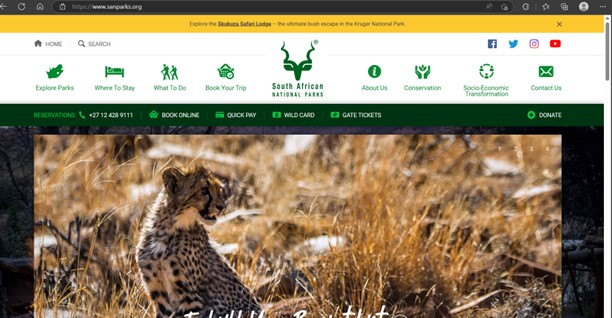
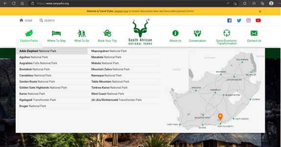
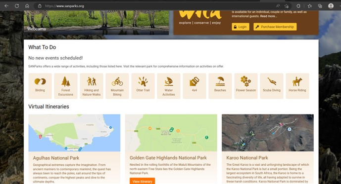

The website I’m using for this essay is called South African National Parks (SANParks). The website can be found at South African National Parks - SANParks - Official Website - Accommodation, Activities, Prices, Reservations. This website provides a service to help people explore and choose national wild reserve parks in South Africa. The website gives you a list f the parks in South Africa, where one could find accommodation and pay for it, as well as things to do at these parks in terms of activities like canoeing and hiking.
The first aspect I would like to look at in this is the colouring that they use for the website and the aesthetic that it gives off. On the homepage of this website, we see a very professional-looking page as it is offering services to the user, meaning that all the information that the user need is accessible immediately. For instance, in the header, we can see the exact services that we as the user can apply for and what we can interact with in terms of the services they provide such as which accommodations to book and what activities to do. These tabs are displayed in the header with icons that expand and show further information on the headings such as the where to stay icon opens a list that has checked availability, conferencing, and luxury lodges. In terms of design, I think this is an efficient way to display information without making it overwhelming as the information comes in contained packages so whether the user wants to explore the page or has specific in mind, they are both easy to access and readily available.
figure 1
figure 2
In Figure 1 we see how the information is presented in blocks that make each icon pop out and show what it is offering. In Figure 2 we can see how the list pops out from opening an icon. This gives the information in packages that makes sense for the eyes as the user isn’t immediately overwhelmed with content. In Figure 2 we can also see the map art available on the side that shows the location of parks in South Africa when the name of them is highlighted. This is an interesting way of producing information using Internet art as its basis. “Net Art aims to highlight the “materiality” and aesthetic aspects of the web’s constructive elements” (magazine, n.d.) is a sentence that sticks out to me because in this case, we see how internet art is made to fit the website’s aesthetics as well as show material information about the service the website provides.
In terms of Colour theory (Interaction Design Foundation, n.d.)we can see how the website uses shades of green so that the text is more pleasing to the eye as the contrast between colours isn’t that great. So, as we can see they use lighter green for text and icons and then a darker green for the background. This falls in line with colour theory as these aids in the design of the website to allow the user to “use your products quickly, safely, or without error.” (Interaction Design Foundation, n.d.). which is the main purpose of ergonomic design. Following the colour theory and theme of the website, which is broadly about nature we see the uses of greens and browns a lot throughout the website to emulate the colours we see most often in nature. This fits well with the aesthetics of the website as now we can make those relations from the website’s services to the actual activities and products the website offers.
This falls in line with the IxD process of the website as now we can see how the v. The whole website also takes major notes on user flow and how the user with flows from topic to topic as they place the location of parks first then where to stay in terms of accommodation and then next the activities that the user can do at which places. This content mapping allows the user to make decisions regarding the services of the website as they look at things in the logical order of the steps to take in travelling to these parks. The process follows the thinking of design in Design for the real world as in the mook they make mention of whether someone should design for functionality or aesthetics but rather should go for something that mixes these two aspects (PAPANEK, n.d.)
The design choices show a mixture of aesthetical choices and functionality as the website is still offering a service and wants to use the website as a catalogue to help produce money. This means that above all else the website should be functional in terms of getting the information and service the user needs, but it should be aesthetical to attract the user in the first place. This leads to the interface element of the website as now we see how the icons use representation in terms of a signifier and the signified which makes use of Stuart halls theories (Hall, n.d.). we see that the icons are signifiers of activities while the actual activities are signified this is shown particularly well in the “what to do” section of the website shown in Figure 3.
figure 3
As we can see in the image above the use of brown shades help with visibility as well as to reduce strain on the eyes. We see the uses of the signifier and signified (Hall, n.d.) as we see how the uses of symbols allude to activities, we also see how the uses of maps show us the area and layout of the land in Figure 3.
This also reflects the lecture we had with Peta Goldberg called “A crash course in user experience and interface design” (Goldberg, n.d.). When looking at the section about the laws that affect User experience, we see how the website displays and follows the laws individually. In the Von Restorff effect, we see that when we have similar elements the one, we are on lights up such as in the menu. It also uses Hick’s law by making the decisions easier to see and understand as there is a lot of them. It uses Fitts’ law by displaying important things in bigger sizes and spaces. A loading bar for the images at the top of the page shows the Zeigarnik effect.
In terms of the website’s medium, I think that the website fits a larger medium better as it flows more fluently from item to item as there is a lot of information. The design of the page is responsive and is still just as usable on smaller mediums but due to a load of information, it feels more overwhelming and congested. In terms of the visual weight of the website, everything is centrally focussed as everything is more aligned to the centre of the page within blocks that give information. They added a background image that shows one of the parks or the nature in one of the parks that also shows you the main point about the website but what I like is that they used this and then added a layer on top of it with a white page as the background and then put all the information on that white page. This created better readability on the website while adding to the aesthetics of the website.
When scrolling to the bottom of the website it is there where we see more information on current events and groups one could join. As this information is less important, they filtered it to the bottom of the website. This makes sense logically as now we see that this were only the users that have a larger interest in the deeper involvement of the website would scroll that far and explore more information like signing up for newsletters and participating in events and volunteering. This includes the forums and terms and conditions which are part of the information that the users are less interested in but are still important for the website.
Here they also include extra content such as a gallery so people can see the places that they are planning to visit as well as other things like podcasts as well as other campers’ experiences and reviews and stuff so that the user can better understand the places they intend to visit and see what the location looks like and if it fits the users tastes better.
In terms of interaction, this website includes a variety of things to click and look at, so I think that the intractability of the website is exquisite. Everything created is quite intuited from the map of locations to the glowing of activities it feels like everything has a purpose and the linking between functionality and aesthetics have peaked in conjunction with the theme and purpose of the website. In terms of the functionality of the interactions, we can see that every decision the user makes display information that is important for the user to view for me personally the map that shows the locations displays a lot as we see in-depth where we as the user is going and how far it is from where we are staying. This functionality is very important when deciding on a trip because it determines the means of travel and if there is living accommodation when the user is travelling to. The mouse also changes icons to show what items are clickable and the use of icons makes it easy to narrow down what the user is looking for specifically.
In terms of the ethics of UX, I think that this website is internally connected with how ethics affects the user experience. In De-skilling I think this website is fine because of the effort functionality and the amount of thought that was put into the website we can see that it would take someone with vast experience and skill to recreate or even produce work of this level meaning that it would be hard to replace this person.
In terms of its influence on the user, this website does a great job of displaying a lot of information to the user thereby leaving most of the decision-making to the user. The main influence on the user is in terms of navigation through the website so I believe that the website doesn’t try to lead the user into making bad deals but rather hands them information that could best suit them in terms of their interests and budget.
In the case of privacy, this website leaves the user anonymous and only asks for cookies the amount of information the user decides to give the website is up to them. So, in terms of the ethical behaviour of this website, as it provided a service, I think that it tries to be as ethical as possible and only aids in helping users make informed decisions regarding visiting nature parks. This is even shown by the website raising awareness for certain animal species and asking volunteers for help.
Overall, I think this website is very good in its design and holds a very high standard in aesthetics, functionality, and intractability. I can see that it is well thought out and has great aesthetics as well as ethics.
(1931 words)
Goldberg, P., n.d. A crash course in User Experience and interface design.. s.l.:s.n. Hall, S., n.d. THE WORK OF REPRESENTATION. [Online] Available at: https://syllabus.pirate.care/_preview/library/Stuart%20Hall/The%20work%20of%20representation%20(457)/The%20work%20of%20representation%20-%20Stuart%20Hall.pdf Interaction Design Foundation, n.d. What is Color Theory? | IxDF - Interaction Design Foundation. [Online] Available at: https://www.interaction-design.org/literature/topics/color-theory#:~:text=Color%20theory%20is%20the%20collection,%2C%20psychology%2C%20culture%20and%20more. magazine, A., n.d. Agents Of Change: The Internet.Net Art and How The World Wide Web Has Created A New Medium. [Online] Available at: file:///C:/Users/calvs/Downloads/Ricci%20-%202020%20-%20Net%20Art%20and%20How%20The%20Internet%20Has%20Created%20A%20New%20Med.pdf PAPANEK, V., n.d. DESIGN FOR THE REAL WORLD Human Ecology and Social Change. Second Edition ed. s.l.:Thames & Hudson.